Forecasting Project 1 - Group 7
Data cleaning
We import data and we clean it from NA and from blank rows. We also name the columns. Here is a sample of our data:
Data import
We directly import the data from the excel file, selecting only the range that contains the data, and then setting the column names accordingly.
Data cleaning
Looking at the data we see that October is written with a “k”, so we change that in the Date column. Then we check for missing values, before proceeding.
Converting to tsibble so that we can use the fpp3 and tsibble package functions
THINGS THAT NEED TO BE DONE
In general:
- URGENT: FIX LICHTENSTEIN + add it to final table
- Remove all warnings (Done)
- Complete the Report -> Write specific analysis for different countries
Country specific:
- Explore huge peak in Austria 2002 -> is it an outlier
- Explain big drop in Lichtenstein + thought process behind piece-wise model
1. Introduction
This project is a forecasting analysis for the electricity exports from Switzerland to several European countries. The data used was all provided by the professor and no additional datasets were used. We have selected the models that fit each country the best (based on some performance metrics) and have created forecasts and CI’s for each country as well as the total. In the final report you are now reading, only the most important information is included, and whatever was deemed unnecessary for the report you can find in our code files/appendix.
The forecasting models used in this project are S-Naive, S-ARIMA, ETS and a variant of TSLM (piece-wise) for a specific country.
2. Data Processing
The data we were given was already cleaned, without any missing values. The only noteworthy cleaning we did, was to format the names of all columns and all rows, and to then convert the final table to a tsibble in order to be able to use functions from the tsibble and fpp3 package. All details on how this was done can be found in the code files.
3. Exploratory Data Analysis
3.1 Historical data plots
In this section you can find an example of the exploratory analysis we did to identify outliers and behaviors in our data. We created historical plots of all the data for each country, but this is not presented here and can instead be found in our code files (eda.rmd). The anomalies and outliers in the behaviors of exports for each country, helped guide the rest of our analysis.
For example, we noticed irregularities in the amplitudes of seasonality over time. For countries like Germany and France, the amplitude of the seasonality seems to increase towards the most recent years. Based on this, we decided to do a seasonal/trend decomposition for each country to further analyze this.
Furthermore, for Lichtenstein, we noticed a huge drop in exports after 2008-2009, which indicated that we should try different models like the piece-wise model to seperate the differences in trend over time.
3.2 Seasonal Sub-series plots
We also created seasonal sub-series plots to explore specific months in more detail, for each country. Below you can see the one for the total exports:
data_elec %>% gg_subseries(Total) +
ylab("GWt") + xlab("Month") +
ggtitle("Seasonal subseries plot: Swiss electricity exported to All countries")
Here are some observations based on these plots for each country (which you can find in eda.rmd):
- Germany: It looks like Germany consistently receives more electricity during the summer months (May, June, July, August). Seasonality seems to vary over time, increasing towards the most recent years.
- France: It looks like there are two peaks in energy exported to
France during the year, one in July, and one in December.
- Italy: Similar energy peak in July.
- Austria: Same trend, with a single peak in the summer months, and then relatively constant energy for the other months.
- Lichtenstein: This country shows the opposite trend, with a very
smooth peak in the coldest winter months (Jan,Feb), and the lowest
energy exports during the summer months.
- Total: Clearly seeing the peak in energy exports to countries in the summer, and specifically in July. The other months are at similar levels for the total electricity exports.
In summary, the main observation we got from these historical plots, was that all countries (except Lichtenstein) experience peaks in the electricity they receive from Switzerland in the summer months.
Before this monthly analysis, we expected that energy exports to these countries, would be higher in the winter months, as that’s when people tend to consume more energy to heat up their homes (we assumed this to be one of the biggest drivers in energy consumption). However, in reality it seems like electricity exports are peaking in the summer and not in the winter months. Our explanation for this is that the ways to heat up a home in the winter are mainly based on oil/gas rather than electricity which is why there is no peak for electricity exports in the winter. On the contrary, during the summer months, people tend to cool down their homes using Air-conditioning which primarily uses electricity, hence the peak in the summer months. This does not explain why Lichtenstein does not follow the same pattern, despite being geographically right next to all of these countries (hence having similar climate).
3.3 ACF - Autocorrelation analysis
Before moving on with the models and in order to be able to use them, we wanted to check for autocorrelation in the time series. Here is data on Germany which is lagged by 12 periods:
#Graph of 12 lagged months for Germany
data_elec %>%
gg_lag(Germany, lags = 1:12, geom="point") +
ggtitle("Germany 12-period lag graph")
From this graph, we can visualize autocorrelation. It’s clear that the autocorrelation is the highest for the 1-month lag, and the 12-month lag. We can see this because the points in the first and last scatterplot (Current month vs Lagged period) approach the 45-degree line, indicating the similarity in magnitude of two the observations.
Based on the strong and clear presence of autocorrelation, we expect that a model like ARIMA/SARIMA will do a good job to capture this auto-correlation component, and will most likely have the best performance compared to other models. On the contrary, auto-correlation tends to impact the performance of SNAIVE models, as they rely on the assumption that the future values are solely determined by past values without considering any auto-correlation patterns. This suggests that our SNAIVE model will not be fitting the data as well.
3.4 Decomposition
In the final part of our EDA, we decided to perform an STL decomposition, as it can provide valuable insights and help explore and understand any strange patterns in our data.
Overall as you can see below, we observed strong seasonality and trend patterns in each country and all countries together which suggested our models should have a way to capture the presence of seasonality and trend. This can be seen in the trend + season_year graphs which show the trend + seasonal component in relation to the overall variation in the data (this is seen using the grey box on the left of each graph). Finally, we can also see that the “remainder” component is quite significant in size (relative to the overall variation) which makes the time series difficult to predict accurately.
STL Decomposition for all countries
Germany
data_elec %>%
model(STL(Germany ~ trend(window = 7) + season(window = "periodic"),
robust = TRUE)) %>%
components() %>%
autoplot()
France
#STL Decomposition_France
data_elec %>%
model(STL(France ~ trend(window = 7) + season(window = "periodic"),
robust = TRUE)) %>%
components() %>%
autoplot()
Italy
data_elec %>%
model(STL(Italy ~ trend(window = 7) + season(window = "periodic"),
robust = TRUE)) %>%
components() %>%
autoplot()
Austria
data_elec %>%
model(STL(Austria ~ trend(window = 7) + season(window = "periodic"),
robust = TRUE)) %>%
components() %>%
autoplot()


4. Model Selection
Methodology
To evaluate the forecast accuracy, we will test how a model performs on new data not used during the fitting phase. We split our data into training and test set. The first one we will use to estimate any parameters of the forecasting method, and the second - is to define the model’s accuracy. We fit the training data to models selected (ARIMA, ETS, SNAIVE) to forecast 60 following periods (in our case, months). We refit our models with test data and calculate the accuracy of the forecast. We select the model with the lowest accuracy metrics for further forecast. Low metric values indicate the better predictive performance of the model, with a value of 0 indicating a perfect fit between the predicted and actual values. Residuals analysis is also going to be plotted to see how well the model captures the dynamics of the data. Good models’ residuals should be stationary (white noise) and have no patterns.
We can see strong seasonality and trend in data from our decomposition analysis, so we tested ARIMA, ETS, and Seasonal NAIVE models as we assume these models can handle these types of data the best.
As the most accurate forecast is of interest, we will give more weight to the model with low values of RMSE and MAE, even though another model has a higher AIC (see Appendix 2.).
Lichtenstein Analysis will be described separately.
4.1 Germany
Germany_since_2015 <- data_elec %>%
select(Date,Germany) %>%
suppressWarnings(filter(Date >= as.Date("2015-01-01")))Testing Models
Below is the plot of how well each model fits the data based on a 60-period prediction starting from 2016.
#Split the data
training_ge <- data_elec %>% select(Date,Germany) %>% filter(Date < as.Date("2016-01-01"))
test_ge <- data_elec %>% select(Date,Germany) %>% filter(Date >= as.Date("2016-01-01"))# Fit ARIMA model and generate forecasts
data_fit_ge_a <- training_ge %>%
model(ARIMA(Germany))
forecasts_ge_a <- data_fit_ge_a %>%
forecast(h = 60)
# Fit ETS model and generate forecasts
data_fit_ge_e <- training_ge %>%
model(ETS(Germany))
forecasts_ge_e <- data_fit_ge_e %>%
forecast(h = 60)
# Fit seasonal naive model and generate forecasts
data_fit_ge_n <- training_ge %>%
model(SNAIVE(Germany))
forecasts_ge_n <- data_fit_ge_n %>%
forecast(h = 60)
# Combine forecasts into a single data frame
all_forecasts_ge <- bind_rows(
data.frame(Date = forecasts_ge_a$Date, Method = "ARIMA", Forecast = forecasts_ge_a$.mean),
data.frame(Date = forecasts_ge_e$Date, Method = "ETS", Forecast = forecasts_ge_e$.mean),
data.frame(Date = forecasts_ge_n$Date, Method = "SNAIVE", Forecast = forecasts_ge_n$.mean))
# Plot all three sets of forecasts together
data_elec %>% autoplot(Germany) +
geom_line(data = all_forecasts_ge, aes(x = Date, y = Forecast, color = Method)) +
labs(title = "Electricity Consumption in Germany")
Measuring Model Accuracy
According to the accuracy table RMSE, MAE and other indicators, ARIMA has the lowest values on the test data. The ARIMA model has an AIC of 2422.94, AICc of 2423.39, and BIC of 2442.49. On the other hand, the ETS model has an AIC of 2975.557, AICc of 2978.110, and BIC of 3025.329. Therefore, based on these criteria, we can conclude that the ARIMA model fits the data better than the ETS model.
#Accuracy
germany_accuracy_a <-data_fit_ge_a %>%
refit(test_ge) %>%
accuracy()
germany_accuracy_e <-data_fit_ge_e %>%
refit(test_ge) %>%
accuracy()
germany_accuracy_n <-data_fit_ge_n %>%
refit(test_ge) %>%
accuracy()
germany_accuracy_table <- rbind(
data.frame(germany_accuracy_a),
data.frame(germany_accuracy_e),
data.frame(germany_accuracy_n))
#AIC
germany_accuracy_table## .model .type ME RMSE MAE MPE MAPE
## 1 ARIMA(Germany) Training 9.0270898 191.3758 120.9560 -6.177920 30.32461
## 2 ETS(Germany) Training -34.0600578 210.3173 130.9707 -9.946267 32.28047
## 3 SNAIVE(Germany) Training 0.5211268 329.2936 218.9718 -12.958205 52.08664
## MASE RMSSE ACF1
## 1 0.5523815 0.5811706 0.4239149
## 2 0.5981166 0.6386924 0.5151985
## 3 1.0000000 1.0000000 0.6538549## Series: Germany
## Model: ARIMA(1,0,1)(2,1,1)[12]
##
## Coefficients:
## ar1 ma1 sar1 sar2 sma1
## 0.7853 -0.2946 -0.8231 -0.4046 0.0965
## s.e. 0.0731 0.1106 0.1925 0.1247 0.2054
##
## sigma^2 estimated as 15296: log likelihood=-1124.06
## AIC=2260.11 AICc=2260.6 BIC=2279.27## Series: Germany
## Model: ETS(M,N,M)
## Smoothing parameters:
## alpha = 0.3739358
## gamma = 0.3451097
##
## Initial states:
## l[0] s[0] s[-1] s[-2] s[-3] s[-4] s[-5] s[-6]
## 653.4368 0.6246774 0.7255761 0.7347587 1.011001 1.387123 1.493534 1.469065
## s[-7] s[-8] s[-9] s[-10] s[-11]
## 1.560156 0.7932617 0.864902 0.6433645 0.6925801
##
## sigma^2: 0.094
##
## AIC AICc BIC
## 2797.057 2799.784 2845.919Residuals
The output below also suggests that the ARIMA model did well in capturing all the dynamics in data, as the residuals seem to be white noise.

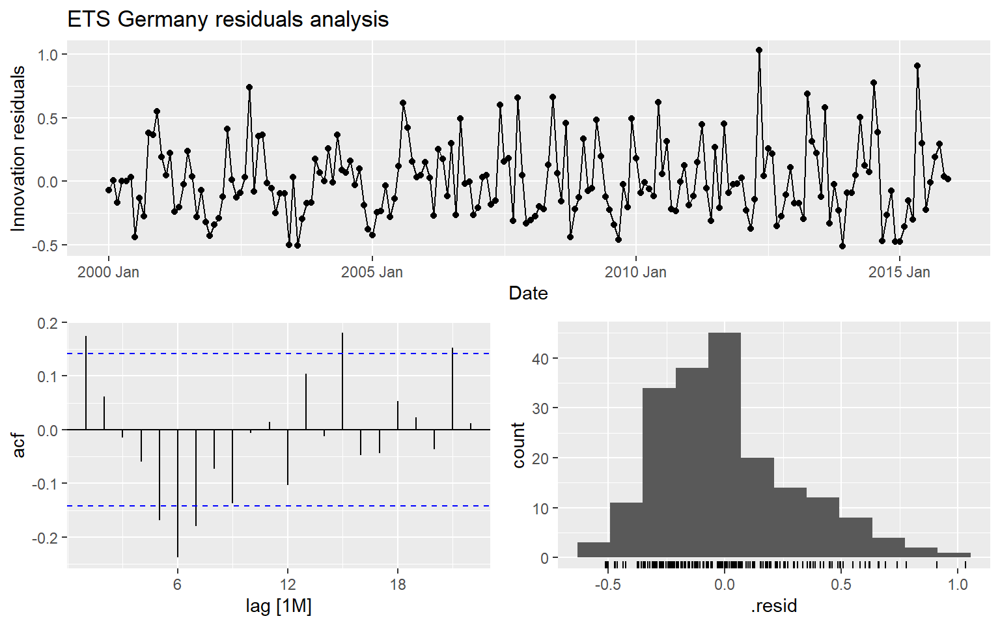
## Warning: Removed 12 rows containing missing values (`geom_line()`).## Warning: Removed 12 rows containing missing values (`geom_point()`).## Warning: Removed 12 rows containing non-finite values (`stat_bin()`).
4.2 Italy
#Selecting Italy only since 2018 to better display the forecast. 2018 will both show the trend BEFORE covid + improve display
Italy_since_2018 <- data_elec %>% select(Date,Italy) %>% filter(Date >= as.Date("2018-01-01"))Testing Models
Below is the plot of how well each model fits the data based on a 60-period prediction starting from 2016.
#Split the data
training_it <- data_elec %>% select(Date, Italy) %>% filter(Date < as.Date("2016-01-01"))
test_it <- data_elec %>% select(Date, Italy) %>% filter(Date >= as.Date("2016-01-01"))
# Fit ARIMA model and generate forecasts
data_fit_it_a <- training_it %>%
model(ARIMA(Italy))
forecasts_it_a <- data_fit_it_a %>%
forecast(h = 60)
forecasts_it_a <- data_fit_it_a %>%
forecast(h = 60)
# Fit ETS model and generate forecasts
data_fit_it_e <- training_it %>%
model(ETS(Italy))
forecasts_it_e <- data_fit_it_e %>%
forecast(h = 60)
# Fit seasonal naive model and generate forecasts
data_fit_it_n <- training_it %>%
model(SNAIVE(Italy))
forecasts_it_n <- data_fit_it_n %>%
forecast(h = 60)
# Combine forecasts into a single data frame
all_forecasts_it <- bind_rows(
data.frame(Date = forecasts_it_a$Date, Method = "ARIMA", Forecast = forecasts_it_a$.mean),
data.frame(Date = forecasts_it_e$Date, Method = "ETS", Forecast = forecasts_it_e$.mean),
data.frame(Date = forecasts_it_n$Date, Method = "SNAIVE", Forecast = forecasts_it_n$.mean))
# Plot all three sets of forecasts together
data_elec %>% autoplot(Italy) +
geom_line(data = all_forecasts_it, aes(x = Date, y = Forecast, color = Method)) +
labs(title = "Electricity Demand in Italy")
Measuring Model Accuracy
According to the accuracy table below, RMSE, MAE, and other indicators, ETS has the lowest values on the test data. However, ARIMA has lower values of AIC=2708.77, AICc=2709.1, and BIC=2725.06 than the ETS model.
#Accuracy
italy_accuracy_a <-data_fit_it_a %>%
refit(test_it) %>%
accuracy()
italy_accuracy_e <-data_fit_it_e %>%
refit(test_it) %>%
accuracy()
italy_accuracy_n <-data_fit_it_n %>%
refit(test_it) %>%
accuracy()
italy_accuracy_table <- rbind(
data.frame(italy_accuracy_a),
data.frame(italy_accuracy_e),
data.frame(italy_accuracy_n))
#AIC
report(data_fit_it_a)## Series: Italy
## Model: ARIMA(1,0,0)(2,0,0)[12] w/ mean
##
## Coefficients:
## ar1 sar1 sar2 constant
## 0.6369 0.3471 0.3479 227.4524
## s.e. 0.0565 0.0673 0.0717 16.0636
##
## sigma^2 estimated as 73103: log likelihood=-1349.39
## AIC=2708.77 AICc=2709.1 BIC=2725.06## Series: Italy
## Model: ETS(A,N,A)
## Smoothing parameters:
## alpha = 0.7893584
## gamma = 0.0001000066
##
## Initial states:
## l[0] s[0] s[-1] s[-2] s[-3] s[-4] s[-5] s[-6]
## 2001.551 15.17983 90.59285 210.0609 -95.62885 -503.615 165.2749 -103.177
## s[-7] s[-8] s[-9] s[-10] s[-11]
## -101.2201 -20.17958 171.0857 59.06312 112.5631
##
## sigma^2: 71693.32
##
## AIC AICc BIC
## 3171.492 3174.219 3220.354## .model .type ME RMSE MAE MPE MAPE
## 1 ARIMA(Italy) Training -48.053328 349.3088 284.5911 -7.772352 19.11066
## 2 ETS(Italy) Training -2.494859 311.7141 241.4607 -2.802543 14.91659
## 3 SNAIVE(Italy) Training -12.436620 554.0566 432.4366 -7.043190 28.78426
## MASE RMSSE ACF1
## 1 0.6581105 0.6304568 -0.03999788
## 2 0.5583725 0.5626034 0.03031226
## 3 1.0000000 1.0000000 0.53072915Residuals
The output below also suggests that the ARIMA model did well in capturing all the dynamics in data, as the residuals seem to be white noise.
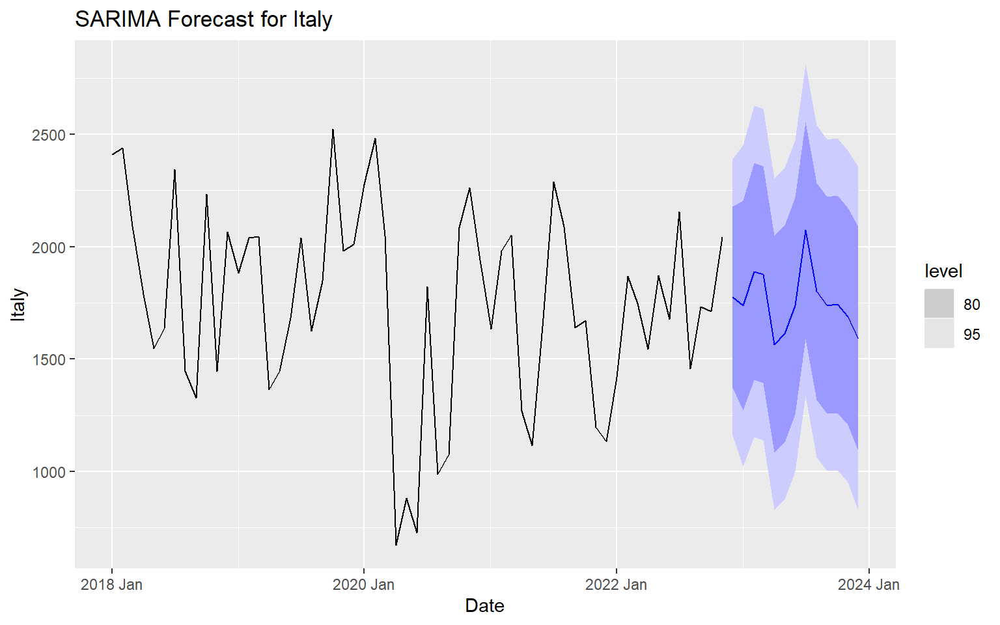
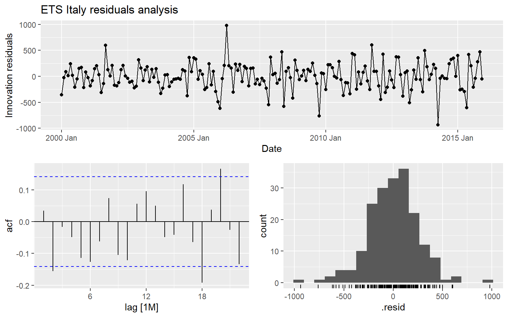
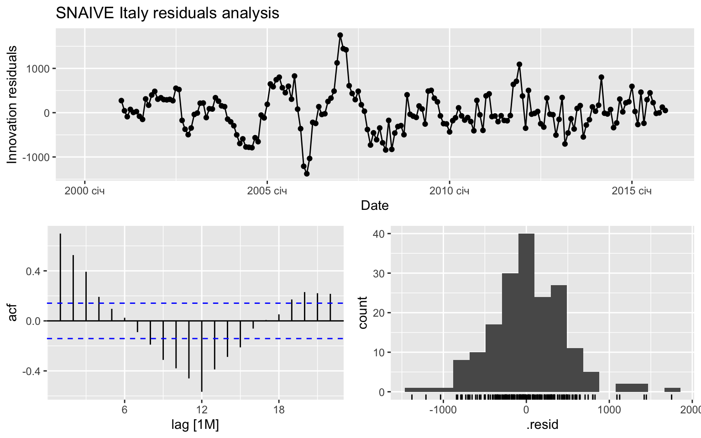
4.3 Austria
#Investigating Austria closely since 2018, because it seems like something changed -> perhaps should use Piecewise!!!
Austria_since_2015 <- data_elec %>% select(Date,Austria) %>% filter(Date >= as.Date("2015-01-01"))
Austria_since_2018 <- data_elec %>% select(Date,Austria) %>% filter(Date >= as.Date("2018-02-01"))Testing Models
Below is the plot of how well each model fits the data based on a 60-period prediction starting from 2016.
#Split the data
training_au <- data_elec %>% select(Date, Austria) %>% filter(Date < as.Date("2016-01-01"))
test_au <- data_elec %>% select(Date, Austria) %>% filter(Date >= as.Date("2016-01-01"))
# Fit ARIMA model and generate forecasts
data_fit_au_a <- training_au %>%
model(ARIMA(Austria, stepwise = FALSE))
forecasts_au_a <- data_fit_au_a %>%
forecast(h = 60)
# Fit ETS model and generate forecasts
data_fit_au_e <- training_au %>%
model(ETS(Austria))
forecasts_au_e <- data_fit_au_e %>%
forecast(h = 60)
# Fit seasonal naive model and generate forecasts
data_fit_au_n <- training_au %>%
model(SNAIVE(Austria))
forecasts_au_n <- data_fit_au_n %>%
forecast(h = 60)
# Combine forecasts into a single data frame
all_forecasts_au <- bind_rows(
data.frame(Date = forecasts_au_a$Date, Method = "ARIMA", Forecast = forecasts_au_a$.mean),
data.frame(Date = forecasts_au_e$Date, Method = "ETS", Forecast = forecasts_au_e$.mean),
data.frame(Date = forecasts_au_n$Date, Method = "SNAIVE", Forecast = forecasts_au_n$.mean))
# Plot all three sets of forecasts together
data_elec %>% autoplot(Austria) +
geom_line(data = all_forecasts_au, aes(x = Date, y = Forecast, color = Method)) +
labs(title = "Electricity Demand in Austria")
Measuring Model Accuracy
According to the accuracy table below, RMSE, MAE, and other indicators, ETS has the lowest values on the test data. However, ARIMA has lower values of AIC=1839.24, AICc=1840.03, and BIC=1865.3 than the ETS model.
#Accuracy
austria_accuracy_a <-data_fit_au_a %>%
refit(test_au) %>%
accuracy()
austria_accuracy_e <-data_fit_au_e %>%
refit(test_au) %>%
accuracy()
austria_accuracy_n <-data_fit_au_n %>%
refit(test_au) %>%
accuracy()
austria_accuracy_table <- rbind(
data.frame(austria_accuracy_a),
data.frame(austria_accuracy_e),
data.frame(austria_accuracy_n))
#AIC
report(data_fit_au_a)## Series: Austria
## Model: ARIMA(0,0,3)(2,0,1)[12] w/ mean
##
## Coefficients:
## ma1 ma2 ma3 sar1 sar2 sma1 constant
## 0.5991 0.1591 0.1055 0.6072 0.0853 -0.3699 6.3202
## s.e. 0.0742 0.0814 0.0731 0.2940 0.1561 0.2850 2.1449
##
## sigma^2 estimated as 796.7: log likelihood=-911.62
## AIC=1839.24 AICc=1840.03 BIC=1865.3## Series: Austria
## Model: ETS(A,N,A)
## Smoothing parameters:
## alpha = 0.5246043
## gamma = 0.0001000228
##
## Initial states:
## l[0] s[0] s[-1] s[-2] s[-3] s[-4] s[-5] s[-6]
## 39.20052 -12.84024 -7.616428 -8.086183 -0.9683645 43.50499 39.8389 2.189109
## s[-7] s[-8] s[-9] s[-10] s[-11]
## 0.7038562 -11.55768 -14.38028 -16.43484 -14.35283
##
## sigma^2: 895.6703
##
## AIC AICc BIC
## 2330.036 2332.764 2378.899## .model .type ME RMSE MAE
## 1 ARIMA(Austria, stepwise = FALSE) Training 23.712075 58.28096 41.41573
## 2 ETS(Austria) Training 1.957058 49.14910 35.08150
## 3 SNAIVE(Austria) Training 10.760563 88.47408 67.54930
## MPE MAPE MASE RMSSE ACF1
## 1 -18.68018 72.22767 0.6131186 0.6587349 -0.05024102
## 2 -66.98305 101.49245 0.5193467 0.5555198 0.04964282
## 3 -57.48300 118.72629 1.0000000 1.0000000 0.50380298Residuals
The output below also suggests that the ARIMA model did well in capturing all the dynamics in data, as the residuals seem to be white noise.

## Warning: Removed 12 rows containing missing values (`geom_line()`).## Warning: Removed 12 rows containing missing values (`geom_point()`).## Warning: Removed 12 rows containing non-finite values (`stat_bin()`).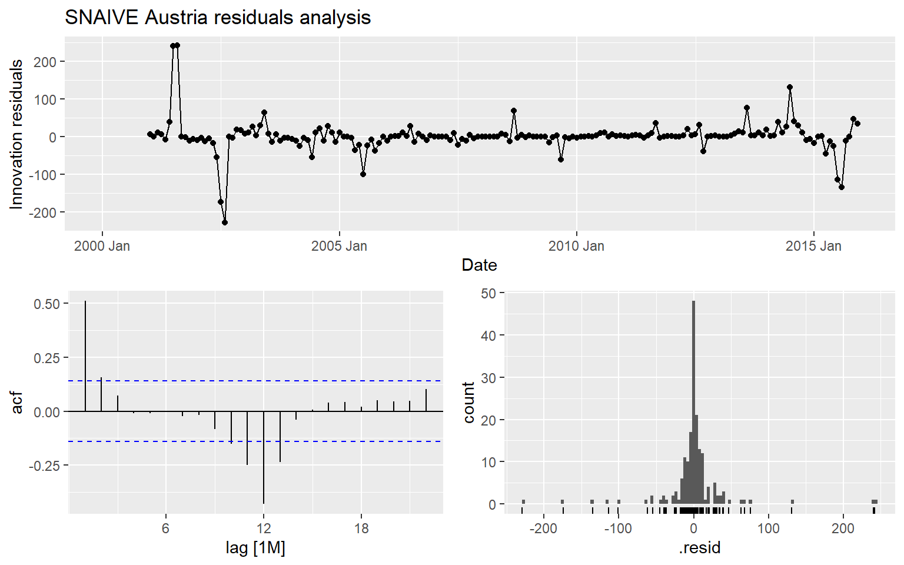
4.4 France
Testing Models
Below is the plot of how well each model fits the data based on a 60-period prediction starting from 2016.
#Split the data
training_fr <- data_elec %>% select(Date, France) %>% filter(Date < as.Date("2016-01-01"))
test_fr <- data_elec %>% select(Date, France) %>% filter(Date >= as.Date("2016-01-01"))
# Fit ARIMA model and generate forecasts
data_fit_fr_a <- training_fr %>%
model(ARIMA(France))
forecasts_fr_a <- data_fit_fr_a %>%
forecast(h = 60)
# Fit ETS model and generate forecasts
data_fit_fr_e <- training_fr %>%
model(ETS(France))
forecasts_fr_e <- data_fit_fr_e %>%
forecast(h = 60)
# Fit seasonal naive model and generate forecasts
data_fit_fr_n <- training_fr %>%
model(SNAIVE(France))
forecasts_fr_n <- data_fit_fr_n %>%
forecast(h = 60)
# Combine forecasts into a single data frame
all_forecasts_fr <- bind_rows(
data.frame(Date = forecasts_fr_a$Date, Method = "ARIMA", Forecast = forecasts_fr_a$.mean),
data.frame(Date = forecasts_fr_e$Date, Method = "ETS", Forecast = forecasts_fr_e$.mean),
data.frame(Date = forecasts_fr_n$Date, Method = "SNAIVE", Forecast = forecasts_fr_n$.mean))
# Plot all three sets of forecasts together
data_elec %>% autoplot(France) +
geom_line(data = all_forecasts_fr, aes(x = Date, y = Forecast, color = Method)) +
labs(title = "Electricity Demand in France")
Measuring Model Accuracy
According to the accuracy table below, RMSE, MAE, and other indicators, ETS has the lowest values on the test data. However, ARIMA has lower values of AIC = 2558.88, AICc = 2559.46, and BIC=2582.07 than the ETS model.
#Accuracy
france_accuracy_a <-data_fit_fr_a %>%
refit(test_fr) %>%
accuracy()
france_accuracy_e <-data_fit_fr_e %>%
refit(test_fr) %>%
accuracy()
france_accuracy_n <-data_fit_fr_n %>%
refit(test_fr) %>%
accuracy()
france_accuracy_table <- rbind(
data.frame(france_accuracy_a),
data.frame(france_accuracy_e),
data.frame(france_accuracy_n))
#AIC
report(data_fit_fr_a)## Series: France
## Model: ARIMA(1,1,4)(0,0,1)[12]
##
## Coefficients:
## ar1 ma1 ma2 ma3 ma4 sma1
## 0.0186 -0.4859 -0.1850 -0.0946 -0.1620 0.1771
## s.e. 0.4208 0.4161 0.2162 0.1137 0.1172 0.0764
##
## sigma^2 estimated as 15135: log likelihood=-1188.05
## AIC=2390.09 AICc=2390.7 BIC=2412.86## .model .type ME RMSE MAE MPE MAPE
## 1 ARIMA(France) Training 0.4465108 208.4824 169.0814 -30.99631 59.28774
## 2 ETS(France) Training -7.7226182 181.6390 146.1496 -30.05412 53.91812
## 3 SNAIVE(France) Training -7.8450704 273.8479 216.0141 -35.68783 76.53401
## MASE RMSSE ACF1
## 1 0.7827331 0.7613072 -0.07489327
## 2 0.6765742 0.6632845 0.14238978
## 3 1.0000000 1.0000000 0.14446626## Series: France
## Model: ETS(M,N,M)
## Smoothing parameters:
## alpha = 0.1672851
## gamma = 0.0001002813
##
## Initial states:
## l[0] s[0] s[-1] s[-2] s[-3] s[-4] s[-5] s[-6]
## 170.609 1.250038 0.9416617 1.095887 1.04379 1.14645 1.291704 0.9937027
## s[-7] s[-8] s[-9] s[-10] s[-11]
## 0.6362197 0.6065504 0.7543347 1.13727 1.102391
##
## sigma^2: 0.2439
##
## AIC AICc BIC
## 2844.032 2846.759 2892.894Residuals
The output below also suggests that the ARIMA model did well in capturing all the dynamics in data, as the residuals seem to be white noise.


## Warning: Removed 12 rows containing missing values (`geom_line()`).## Warning: Removed 12 rows containing missing values (`geom_point()`).## Warning: Removed 12 rows containing non-finite values (`stat_bin()`).
4.6 Total
Testing Models
Below is the plot of how well each model fits the data based on a 60-period prediction starting from 2016.
#Split the data
training_tot <- data_elec %>% select(Date, Total) %>% filter(Date < as.Date("2016-01-01"))
test_tot <- data_elec %>% select(Date, Total) %>% filter(Date >= as.Date("2016-01-01"))
# Fit ARIMA model and generate forecasts
data_fit_tot_a <- training_tot %>%
model(ARIMA(Total))
forecasts_tot_a <- data_fit_tot_a %>%
forecast(h = 60)
# Fit ETS model and generate forecasts
data_fit_tot_e <- training_tot %>%
model(ETS(Total))
forecasts_tot_e <- data_fit_tot_e %>%
forecast(h = 60)
# Fit seasonal naive model and generate forecasts
data_fit_tot_n <- training_tot %>%
model(SNAIVE(Total))
forecasts_tot_n <- data_fit_tot_n %>%
forecast(h = 60)
# Combine forecasts into a single data frame
all_forecasts_tot <- bind_rows(
data.frame(Date = forecasts_tot_a$Date, Method = "ARIMA", Forecast = forecasts_tot_a$.mean),
data.frame(Date = forecasts_tot_e$Date, Method = "ETS", Forecast = forecasts_tot_e$.mean),
data.frame(Date = forecasts_tot_n$Date, Method = "SNAIVE", Forecast = forecasts_tot_n$.mean))
# Plot all three sets of forecasts together
data_elec %>% autoplot(Total) +
geom_line(data = all_forecasts_tot, aes(x = Date, y = Forecast, color = Method)) +
labs(title = "Electricity Demand to all countries")
Measuring Model Accuracy
According to the accuracy table below, RMSE, MAE, and other indicators, ETS has the lowest values on the test data. However, ARIMA has lower values of AIC=2683.45, AICc=2683.9, and BIC=2702.99 than the ETS model.
#Accuracy
total_accuracy_a <-data_fit_tot_a %>%
refit(test_tot) %>%
accuracy()
total_accuracy_e <-data_fit_tot_e %>%
refit(test_tot) %>%
accuracy()
total_accuracy_n <-data_fit_tot_n %>%
refit(test_tot) %>%
accuracy()
total_accuracy_table <- rbind(
data.frame(total_accuracy_a),
data.frame(total_accuracy_e),
data.frame(total_accuracy_n))
#AIC
report(data_fit_tot_a)## Series: Total
## Model: ARIMA(1,0,1)(2,0,0)[12] w/ mean
##
## Coefficients:
## ar1 ma1 sar1 sar2 constant
## 0.7159 -0.2076 0.3750 0.3755 195.5746
## s.e. 0.0912 0.1344 0.0685 0.0708 11.2588
##
## sigma^2 estimated as 63131: log likelihood=-1335.72
## AIC=2683.45 AICc=2683.9 BIC=2702.99## .model .type ME RMSE MAE MPE MAPE
## 1 ARIMA(Total) Training -24.755873 330.0999 265.2221 -2.475478 10.561219
## 2 ETS(Total) Training -4.567152 284.6104 226.3630 -1.089216 8.842026
## 3 SNAIVE(Total) Training -9.154930 538.1098 433.9155 -2.272180 16.742385
## MASE RMSSE ACF1
## 1 0.6112298 0.6134435 -0.032412752
## 2 0.5216754 0.5289076 0.009325172
## 3 1.0000000 1.0000000 0.555685440## Series: Total
## Model: ETS(A,N,A)
## Smoothing parameters:
## alpha = 0.5690082
## gamma = 0.0002217215
##
## Initial states:
## l[0] s[0] s[-1] s[-2] s[-3] s[-4] s[-5] s[-6]
## 2735.222 -30.5261 -39.40677 146.1547 -77.94267 -290.9088 509.1663 81.12738
## s[-7] s[-8] s[-9] s[-10] s[-11]
## 83.81698 -205.6554 -47.17994 -126.659 -1.986777
##
## sigma^2: 60986.36
##
## AIC AICc BIC
## 3140.436 3143.164 3189.299Residuals
The output below also suggests that the ARIMA model did well in capturing all the dynamics in data, as the residuals seem to be white noise.

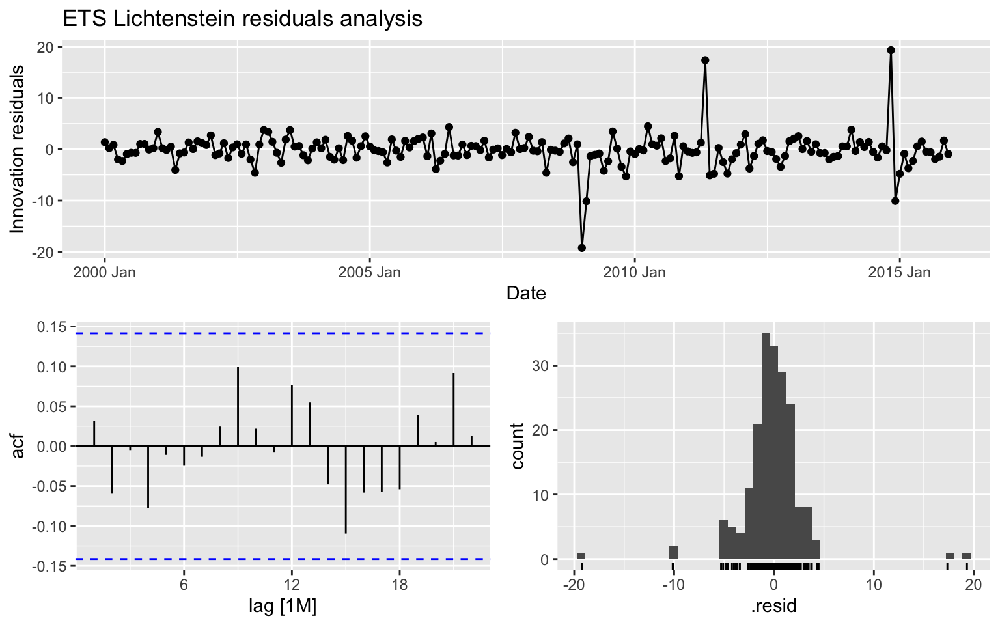
## Warning: Removed 12 rows containing missing values (`geom_line()`).## Warning: Removed 12 rows containing missing values (`geom_point()`).## Warning: Removed 12 rows containing non-finite values (`stat_bin()`).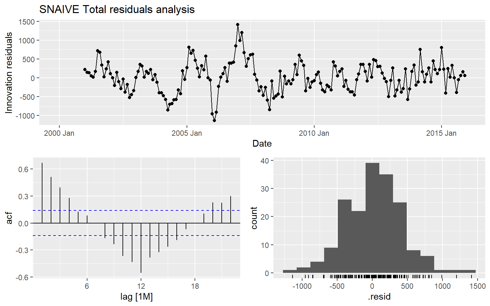
Result
All of these metrics are important for evaluating forecast accuracy. Still, our goal is to obtain the most accurate forecast. Therefore, we give more weight to RMSE and MAE metrics than AIC. As a result, the ARIMA model is selected to forecast the electricity demand in Germany and ETS model - in Italy, Austria, France, and all countries together.
Forecast
For each of our country forecasts, we have decided to use the model with the lowest RMSE as shown in the previous section. This is because we want our models to be as “accurate” as possible, in away that we minimize the error/distance between our forecast values and the actual values. In summary, we used SARIMA for Germany, and ETS for all other countries.
Side note:
Below, for each country, you can see a residual analysis for the every selected model, a graph of the forecast, and finally the forecast table.
The outcome of the residual analysis is to confirm that the model has done a good job fitting the data, and more specifically, here’s what we obtained from it:
A good model fit has the following characteristics in terms of its residuals: - The residuals are distributed symmetrically, in a shape that resembles a Normal distribution. - Low ACF (autocorrelation) in the first few lags. - No Heteroskedasticity: the variance of the residuals is constant. - There is no trend in the residuals.
In essence, what this all means, is that the residuals are white noise. Let’s now look at the results for each country, and make some more specific comments:
Germany
We fit Germany electricity demand data using the ARIMA model.
# Modelling ARIMA automatically
arima_germany <- data_elec %>%
select(Germany) %>%
model(arima = ARIMA(Germany))
# Forecasting using the models
forecast_arima_germany <- arima_germany %>% forecast(h = 13, level = 90) %>% hilo()Checking Residuals
The output below suggests that the ARIMA model did well in capturing all the dynamics in data, as the residuals seem to be white noise.

Graphing the forecast
For better visualization, we plot our forecast results starting from 2015.
arima_germany %>% forecast(h = 13) %>% autoplot(Germany_since_2015) +
labs(title = "ARIMA Forecast for Germany")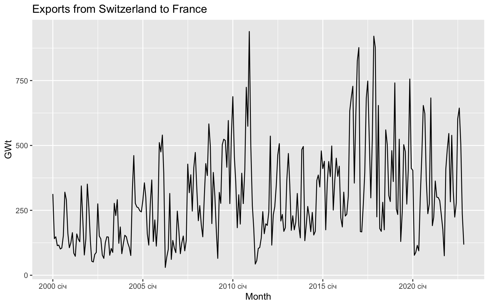
#Extracting the forecasted values
forecast_table_germany_a <- data.frame(Model = c("ARIMA"),
Forecast_Values = c(forecast_arima_germany))
forecast_table_germany_a <- forecast_table_germany_a %>% select(Forecast_Values.Date,Forecast_Values..mean, Forecast_Values.80.)
forecast_table_germany_a$Country <- "Germany"
colnames(forecast_table_germany_a)[1] <- "Month"
colnames(forecast_table_germany_a)[2] <- "PF"
colnames(forecast_table_germany_a)[3] <- "CI"Forecast Table
The resulting forecast table for Germany is shown below.
## Month PF CI Country
## 1 2022 Dec 147.2149 [-38.360414, 332.7901]80 Germany
## 2 2023 Jan 163.1294 [-59.406446, 385.6653]80 Germany
## 3 2023 Feb 141.2789 [-97.586158, 380.1439]80 Germany
## 4 2023 Mar 187.9230 [-58.631997, 434.4780]80 Germany
## 5 2023 Apr 427.7421 [177.462710, 678.0214]80 Germany
## 6 2023 May 712.0248 [459.919727, 964.1299]80 Germany
## 7 2023 Jun 667.7915 [414.786294, 920.7966]80 Germany
## 8 2023 Jul 602.9667 [349.516573, 856.4169]80 Germany
## 9 2023 Aug 674.8981 [421.227698, 928.5686]80 Germany
## 10 2023 Sep 370.6873 [116.907748, 624.4668]80 Germany
## 11 2023 Oct 255.5486 [ 1.715002, 509.3822]80 Germany
## 12 2023 Nov 194.3009 [-59.559468, 448.1612]80 Germany
## 13 2023 Dec 179.9529 [-75.307007, 435.2127]80 GermanyItaly
We fit Italy electricity demand data using the ETS model.
# Modelling ETS automatically
ets_italy <- data_elec %>%
select(Italy) %>%
model(ETS(Italy))
# Forecasting using the models
forecast_ets_italy <- ets_italy %>% forecast(h = 13) %>% hilo()Checking Residuals
The output below suggests that the ETS model did well in capturing all the dynamics in data, as the residuals seem to be white noise.

Graphing the forecast
For better visualization, we plot our forecast results starting from 2018.
ets_italy %>% forecast(h = 13) %>% autoplot(Italy_since_2018) +
labs(title = "ETS Forecast for Italy")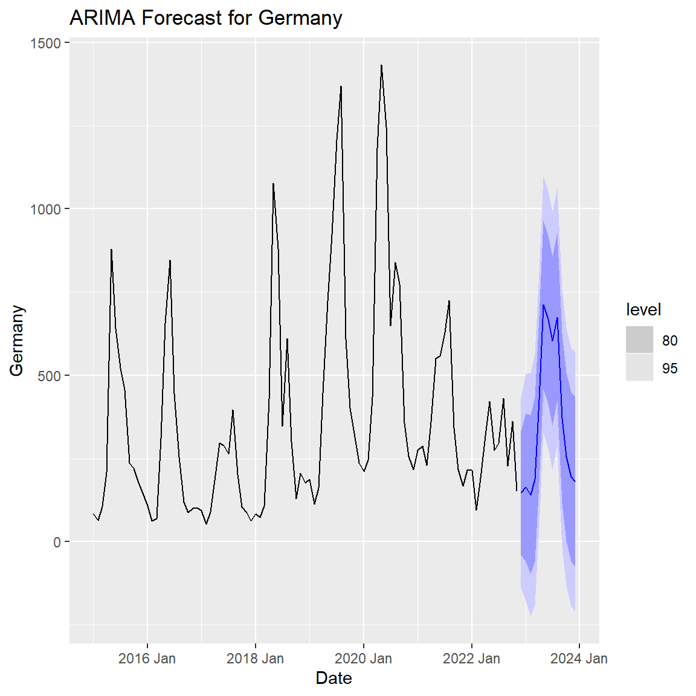
#Extracting the forecasted values
forecast_table_italy_e <- data.frame(Model = c("ETS"),
Forecast_Values = c(forecast_ets_italy))
forecast_table_italy_e <- forecast_table_italy_e %>% select(Forecast_Values.Date,Forecast_Values..mean, Forecast_Values.80.)
forecast_table_italy_e$Country <- "Italy"
colnames(forecast_table_italy_e)[1] <- "Month"
colnames(forecast_table_italy_e)[2] <- "PF"
colnames(forecast_table_italy_e)[3] <- "CI"Forecast Table
The resulting forecast table for Italy is shown below.
## Month PF CI Country
## 1 2022 Dec 1925.151 [1532.6210, 2317.681]80 Italy
## 2 2023 Jan 2005.224 [1503.6805, 2506.767]80 Italy
## 3 2023 Feb 2061.670 [1470.8987, 2652.442]80 Italy
## 4 2023 Mar 2149.965 [1481.7755, 2818.154]80 Italy
## 5 2023 Apr 1796.875 [1059.3507, 2534.400]80 Italy
## 6 2023 May 1760.584 [ 959.7039, 2561.463]80 Italy
## 7 2023 Jun 1767.861 [ 908.2827, 2627.438]80 Italy
## 8 2023 Jul 2154.101 [1239.5850, 3068.617]80 Italy
## 9 2023 Aug 1493.590 [ 527.2539, 2459.926]80 Italy
## 10 2023 Sep 1787.870 [ 772.3551, 2803.386]80 Italy
## 11 2023 Oct 2120.687 [1058.2668, 3183.107]80 Italy
## 12 2023 Nov 1954.703 [ 847.3516, 3062.054]80 Italy
## 13 2023 Dec 1925.151 [ 774.6323, 3075.669]80 ItalyAustria
We fit Austria electricity demand data using the ETS model.
# Modelling ETS automatically
ets_austria <- data_elec %>%
select(Austria) %>%
model(ETS(Austria))
# Forecasting using the models
forecast_ets_austria <- ets_austria %>% forecast(h = 13) %>% hilo()Checking Residuals
The output below suggests that the ETS model did well in capturing all the dynamics in data, as the residuals seem to be white noise.

Graphing the forecast
For better visualization, we plot our forecast results starting from 2018.
ets_austria %>% forecast(h = 13) %>% autoplot(Austria_since_2018) +
labs(title = "ETS Forecast for Austria")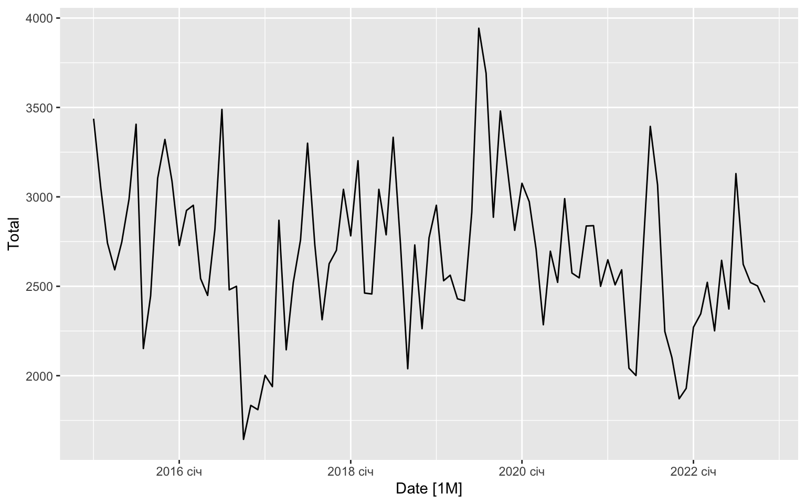
#Extracting the forecasted values
forecast_table_austria_e <- data.frame(Model = c("ETS"),
Forecast_Values = c(forecast_ets_austria))
forecast_table_austria_e <- forecast_table_austria_e %>% select(Forecast_Values.Date,Forecast_Values..mean, Forecast_Values.80.)
forecast_table_austria_e$Country <- "Austria"
colnames(forecast_table_austria_e)[1] <- "Month"
colnames(forecast_table_austria_e)[2] <- "PF"
colnames(forecast_table_austria_e)[3] <- "CI"Forecast Table
The resulting forecast table for Austria is shown below.
## Month PF CI Country
## 1 2022 Dec 109.2886 [59.75363, 158.8235]80 Austria
## 2 2023 Jan 106.3760 [52.01530, 160.7368]80 Austria
## 3 2023 Feb 102.6006 [43.80886, 161.3924]80 Austria
## 4 2023 Mar 102.4725 [39.56102, 165.3839]80 Austria
## 5 2023 Apr 111.9032 [45.12576, 178.6807]80 Austria
## 6 2023 May 122.5810 [52.14940, 193.0126]80 Austria
## 7 2023 Jun 125.5234 [51.61808, 199.4287]80 Austria
## 8 2023 Jul 148.0999 [70.87697, 225.3227]80 Austria
## 9 2023 Aug 147.6801 [67.27636, 228.0838]80 Austria
## 10 2023 Sep 112.2665 [28.80310, 195.7299]80 Austria
## 11 2023 Oct 111.3402 [24.92541, 197.7550]80 Austria
## 12 2023 Nov 107.7202 [18.45029, 196.9902]80 Austria
## 13 2023 Dec 109.2886 [17.25321, 201.3239]80 AustriaFrance
We fit France electricity demand data using the ETS model.
# Modelling ETS automatically
ets_france <- data_elec %>%
select(France) %>%
model(ETS(France))
# Forecasting using the models
forecast_ets_france <- ets_france %>% forecast(h = 13) %>% hilo()Checking Residuals
The output below suggests that the ETS model did a decent job in capturing all the dynamics in data, as the residuals seem to be white noise.
However, it seems like this model for France is not fitting as well as the other models for the previous countries. More specifically, we see that there is more variation in the distribution of the residuals of France’s model compared to other countries. Nevertheless, the distribution of the errors is symmetric, which is good. Furthermore, we notice a peak in the first lagged period of the ACF graph, indicating the presence of autocorrelation between a time period and the previous time period, which is not great in terms of how well the model fits the data.

Graphing the forecast
For better visualization, we plot our forecast results starting from 2015.
ets_france %>% forecast(h = 13) %>% autoplot(France_since_2015) +
labs(title = "ETS Forecast for France")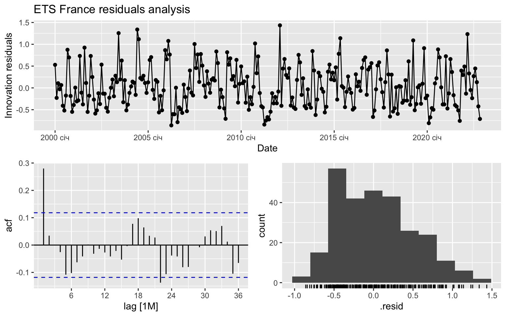
#Extracting the forecasted values
forecast_table_france_e <- data.frame(Model = c("ETS"),
Forecast_Values = c(forecast_ets_france))
forecast_table_france_e <- forecast_table_france_e %>% select(Forecast_Values.Date,Forecast_Values..mean, Forecast_Values.80.)
forecast_table_france_e$Country <- "France"
colnames(forecast_table_france_e)[1] <- "Month"
colnames(forecast_table_france_e)[2] <- "PF"
colnames(forecast_table_france_e)[3] <- "CI"Forecast Table
The resulting forecast table for France is shown below.
## Month PF CI Country
## 1 2022 Dec 452.6419 [167.19710, 738.0867]80 France
## 2 2023 Jan 426.1098 [154.62878, 697.5908]80 France
## 3 2023 Feb 356.1703 [126.94938, 585.3911]80 France
## 4 2023 Mar 268.4822 [ 93.97184, 442.9925]80 France
## 5 2023 Apr 232.8623 [ 80.01875, 385.7058]80 France
## 6 2023 May 216.6737 [ 73.08123, 360.2662]80 France
## 7 2023 Jun 336.6541 [111.42498, 561.8831]80 France
## 8 2023 Jul 454.1439 [147.46155, 760.8263]80 France
## 9 2023 Aug 411.5258 [131.05435, 691.9973]80 France
## 10 2023 Sep 389.8002 [121.71461, 657.8857]80 France
## 11 2023 Oct 351.4656 [107.57262, 595.3585]80 France
## 12 2023 Nov 371.7370 [111.49087, 631.9832]80 France
## 13 2023 Dec 452.6433 [132.98129, 772.3054]80 FranceTotal
We fit Total electricity demand data using the ETS model.
# Modelling ETS automatically
ets_total <- data_elec %>%
select(Total) %>%
model(ETS(Total))
# Forecasting using the models
forecast_ets_total <- ets_total %>% forecast(h = 13) %>% hilo()Checking Residuals
The output below suggests that the ETS model did well in capturing all the dynamics in data, as the residuals seem to be white noise.
ets_total %>% gg_tsresiduals(lag_max = 36) + labs(title = "ETS residuals analysis for all countries")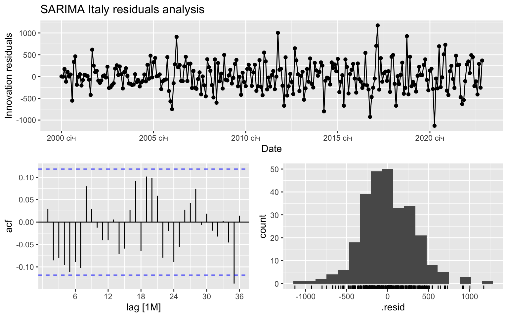
Graphing the forecast
For better visualization, we plot our forecast results starting from 2015.
ets_total %>% forecast(h = 13) %>% autoplot(Total_since_2015) +
labs(title = "ETS Forecast for All Countries")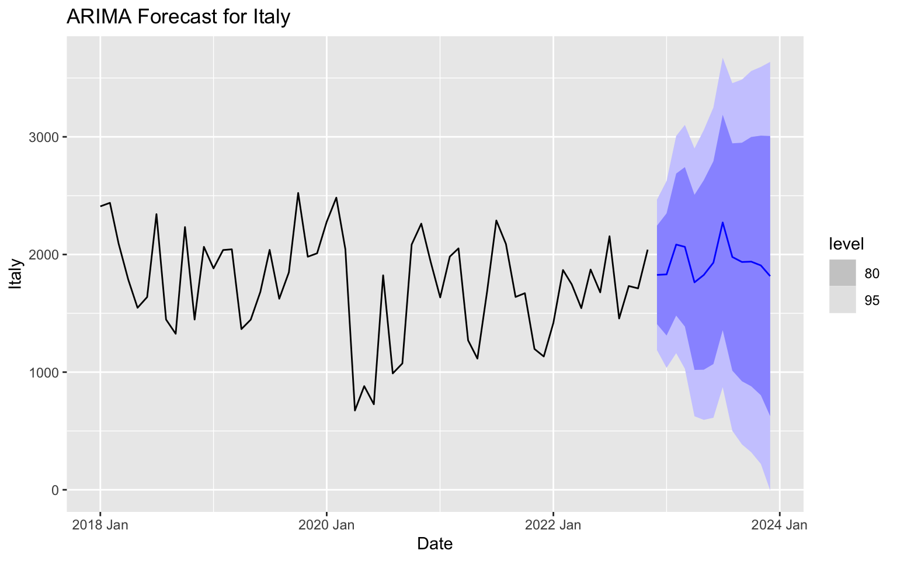
#Extracting the forecasted values
forecast_table_total_e <- data.frame(Model = c("ETS"),
Forecast_Values = c(forecast_ets_total))
forecast_table_total_e <- forecast_table_total_e %>% select(Forecast_Values.Date,Forecast_Values..mean, Forecast_Values.80.)
forecast_table_total_e$Country <- "Total"
colnames(forecast_table_total_e)[1] <- "Month"
colnames(forecast_table_total_e)[2] <- "PF"
colnames(forecast_table_total_e)[3] <- "CI"Forecast Table
The resulting forecast table for Total is shown below.
## Month PF CI Country
## 1 2022 Dec 2444.343 [2082.422, 2806.264]80 Total
## 2 2023 Jan 2466.816 [2052.994, 2880.639]80 Total
## 3 2023 Feb 2401.926 [1942.023, 2861.830]80 Total
## 4 2023 Mar 2468.532 [1966.762, 2970.303]80 Total
## 5 2023 Apr 2253.237 [1712.834, 2793.641]80 Total
## 6 2023 May 2529.512 [1953.059, 3105.965]80 Total
## 7 2023 Jun 2569.070 [1958.692, 3179.447]80 Total
## 8 2023 Jul 3080.736 [2438.224, 3723.249]80 Total
## 9 2023 Aug 2344.734 [1671.618, 3017.850]80 Total
## 10 2023 Sep 2375.726 [1673.339, 3078.113]80 Total
## 11 2023 Oct 2586.032 [1855.546, 3316.518]80 Total
## 12 2023 Nov 2425.270 [1667.717, 3182.823]80 Total
## 13 2023 Dec 2444.343 [1660.667, 3228.019]80 TotalCombining all forecasts into one table:
Below is the final table containing Month, point
forecast PF, 80% lower and upper confidence levels (see
Appendix 3.) interval forecast CI, and
Country.
final_fc <- bind_rows(forecast_table_germany_a, forecast_table_italy_e, forecast_table_france_e, forecast_table_austria_e, forecast_table_total_e)
#final_fc <- final_fc %>% left_join(forecast_table_france_e, by = "Month")
#final_fc <- final_fc %>% left_join(forecast_table_italy_e, by = "Month")
#final_fc <- final_fc %>% left_join(forecast_table_austria_e, by = "Month")
#final_fc <- final_fc %>% left_join(forecast_table_Lichtenstein_a, by = "Month")
final_fc## Month PF CI Country
## 1 2022 Dec 147.2149 [ -38.360414, 332.7901]80 Germany
## 2 2023 Jan 163.1294 [ -59.406446, 385.6653]80 Germany
## 3 2023 Feb 141.2789 [ -97.586158, 380.1439]80 Germany
## 4 2023 Mar 187.9230 [ -58.631997, 434.4780]80 Germany
## 5 2023 Apr 427.7421 [ 177.462710, 678.0214]80 Germany
## 6 2023 May 712.0248 [ 459.919727, 964.1299]80 Germany
## 7 2023 Jun 667.7915 [ 414.786294, 920.7966]80 Germany
## 8 2023 Jul 602.9667 [ 349.516573, 856.4169]80 Germany
## 9 2023 Aug 674.8981 [ 421.227698, 928.5686]80 Germany
## 10 2023 Sep 370.6873 [ 116.907748, 624.4668]80 Germany
## 11 2023 Oct 255.5486 [ 1.715002, 509.3822]80 Germany
## 12 2023 Nov 194.3009 [ -59.559468, 448.1612]80 Germany
## 13 2023 Dec 179.9529 [ -75.307007, 435.2127]80 Germany
## 14 2022 Dec 1925.1509 [1532.621017, 2317.6808]80 Italy
## 15 2023 Jan 2005.2235 [1503.680460, 2506.7666]80 Italy
## 16 2023 Feb 2061.6704 [1470.898736, 2652.4421]80 Italy
## 17 2023 Mar 2149.9648 [1481.775518, 2818.1541]80 Italy
## 18 2023 Apr 1796.8754 [1059.350704, 2534.4000]80 Italy
## 19 2023 May 1760.5836 [ 959.703859, 2561.4634]80 Italy
## 20 2023 Jun 1767.8605 [ 908.282652, 2627.4384]80 Italy
## 21 2023 Jul 2154.1012 [1239.584993, 3068.6173]80 Italy
## 22 2023 Aug 1493.5900 [ 527.253854, 2459.9262]80 Italy
## 23 2023 Sep 1787.8703 [ 772.355065, 2803.3856]80 Italy
## 24 2023 Oct 2120.6871 [1058.266766, 3183.1075]80 Italy
## 25 2023 Nov 1954.7030 [ 847.351557, 3062.0545]80 Italy
## 26 2023 Dec 1925.1509 [ 774.632327, 3075.6695]80 Italy
## 27 2022 Dec 452.6419 [ 167.197098, 738.0867]80 France
## 28 2023 Jan 426.1098 [ 154.628778, 697.5908]80 France
## 29 2023 Feb 356.1703 [ 126.949382, 585.3911]80 France
## 30 2023 Mar 268.4822 [ 93.971837, 442.9925]80 France
## 31 2023 Apr 232.8623 [ 80.018754, 385.7058]80 France
## 32 2023 May 216.6737 [ 73.081230, 360.2662]80 France
## 33 2023 Jun 336.6541 [ 111.424984, 561.8831]80 France
## 34 2023 Jul 454.1439 [ 147.461548, 760.8263]80 France
## 35 2023 Aug 411.5258 [ 131.054347, 691.9973]80 France
## 36 2023 Sep 389.8002 [ 121.714606, 657.8857]80 France
## 37 2023 Oct 351.4656 [ 107.572617, 595.3585]80 France
## 38 2023 Nov 371.7370 [ 111.490871, 631.9832]80 France
## 39 2023 Dec 452.6433 [ 132.981289, 772.3054]80 France
## 40 2022 Dec 109.2886 [ 59.753630, 158.8235]80 Austria
## 41 2023 Jan 106.3760 [ 52.015301, 160.7368]80 Austria
## 42 2023 Feb 102.6006 [ 43.808863, 161.3924]80 Austria
## 43 2023 Mar 102.4725 [ 39.561016, 165.3839]80 Austria
## 44 2023 Apr 111.9032 [ 45.125759, 178.6807]80 Austria
## 45 2023 May 122.5810 [ 52.149396, 193.0126]80 Austria
## 46 2023 Jun 125.5234 [ 51.618081, 199.4287]80 Austria
## 47 2023 Jul 148.0999 [ 70.876968, 225.3227]80 Austria
## 48 2023 Aug 147.6801 [ 67.276363, 228.0838]80 Austria
## 49 2023 Sep 112.2665 [ 28.803098, 195.7299]80 Austria
## 50 2023 Oct 111.3402 [ 24.925410, 197.7550]80 Austria
## 51 2023 Nov 107.7202 [ 18.450290, 196.9902]80 Austria
## 52 2023 Dec 109.2886 [ 17.253212, 201.3239]80 Austria
## 53 2022 Dec 2444.3430 [2082.421872, 2806.2640]80 Total
## 54 2023 Jan 2466.8163 [2052.993669, 2880.6388]80 Total
## 55 2023 Feb 2401.9264 [1942.022721, 2861.8301]80 Total
## 56 2023 Mar 2468.5322 [1966.761626, 2970.3027]80 Total
## 57 2023 Apr 2253.2374 [1712.833909, 2793.6409]80 Total
## 58 2023 May 2529.5121 [1953.058931, 3105.9652]80 Total
## 59 2023 Jun 2569.0696 [1958.692290, 3179.4469]80 Total
## 60 2023 Jul 3080.7365 [2438.223662, 3723.2493]80 Total
## 61 2023 Aug 2344.7339 [1671.618062, 3017.8498]80 Total
## 62 2023 Sep 2375.7261 [1673.339235, 3078.1129]80 Total
## 63 2023 Oct 2586.0317 [1855.545865, 3316.5175]80 Total
## 64 2023 Nov 2425.2702 [1667.717313, 3182.8230]80 Total
## 65 2023 Dec 2444.3430 [1660.666608, 3228.0193]80 TotalChallenges and Further Analysis
95% CI with its wider range of values, resulted in lower than 0 electricity demand in some countries, so we chose to include 80% CI in the final tables. However, some of Germany’s lower and upper values remain negative with different confidence intervals. It may indicate that the forecasting model or method used may not adequately capture the underlying dynamics of electricity demand. Even though the model was chosen based on the accuracy analysis we conducted before. Further investigation and model testing is required.